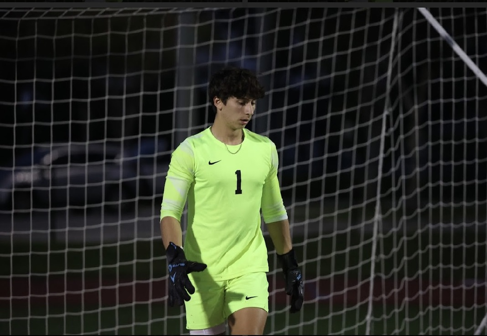

Goalkeeping

Draft — your story goes here
Two or three sentences, in your voice, to open this section: when you went in goal, your UPSL club, the season you made Miami Herald All-Conference Second Team, and one goal you conceded that you still think about. The analysis below only works if a real match sits in front of it.
A striker can miss ten chances and still be carried off the field for the eleventh. A keeper can be perfect for eighty-nine minutes and lose the match in the ninetieth. It is the only position on the pitch where the scoring is openly asymmetric: you are not credited for the saves, you are debited for the goals, and the job is to make the difference between those two numbers as boring as possible.
That is also the exact shape of a credit investment, which is why the fixed income work made immediate sense to me. Lend well and you get par and a coupon. Lend badly and you get the whole loss. At Aevum I built models measuring how far prices move on a 100bp shift and compared investment grade against high yield spreads over Treasuries, looking for where investors were genuinely paid for the risk. At United Capital I checked whether an issuer’s project cash flows actually covered debt service. Both of those are goalkeeping questions. Not how good can this get, but what beats me, and from where.
The other thing about the position is the sightline. You are the only player who sees the entire field at once, and organizing the eleven in front of you matters more than anything you do with your hands.
I want a seat where the downside is mine to hold for five years, not one where the work ends when the deal closes.